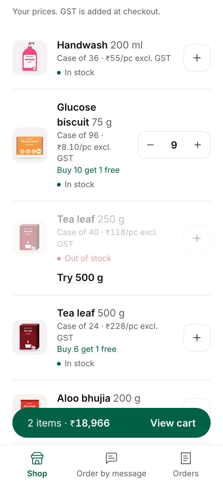
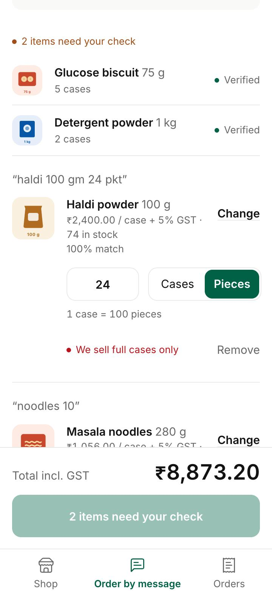
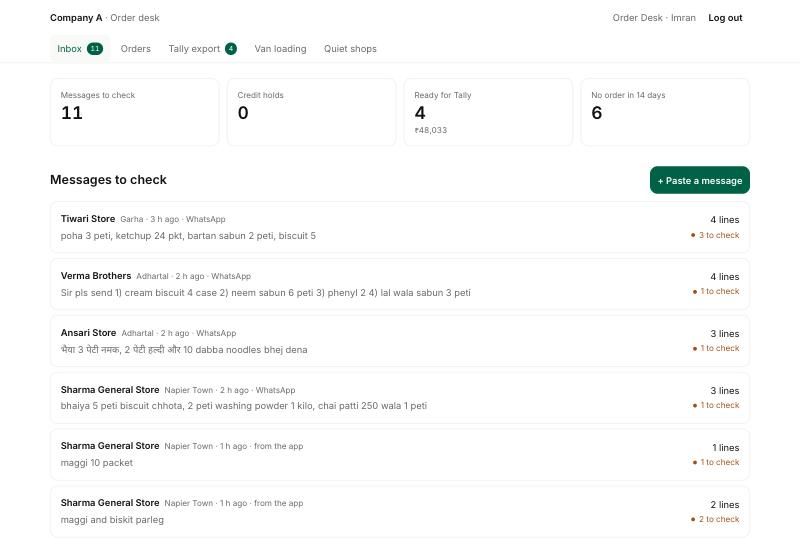
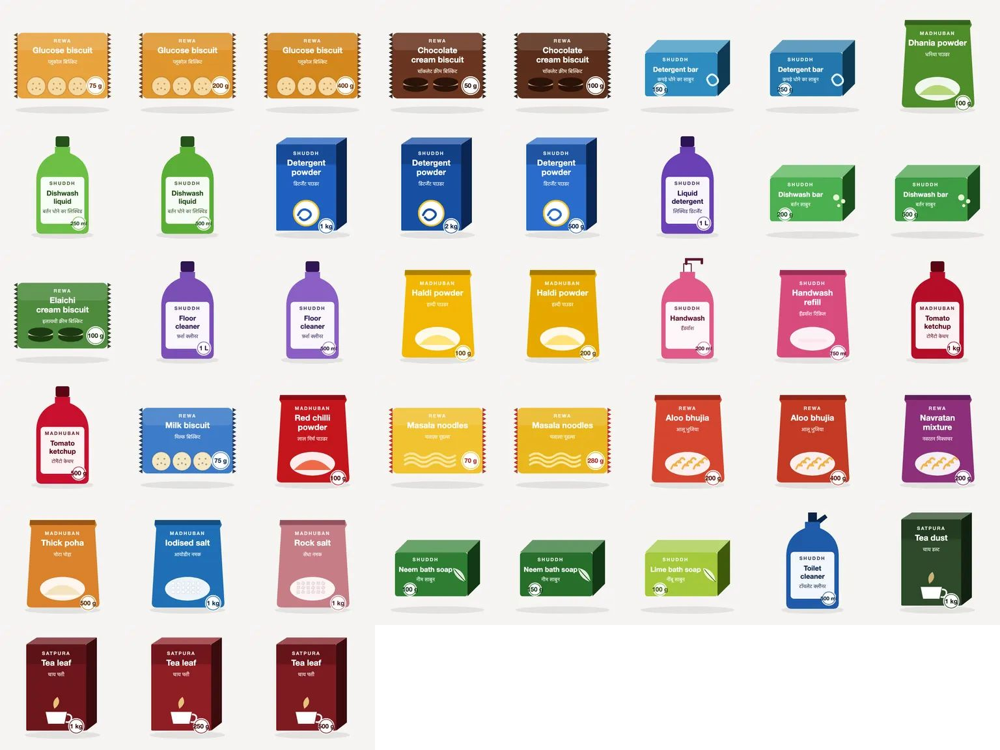
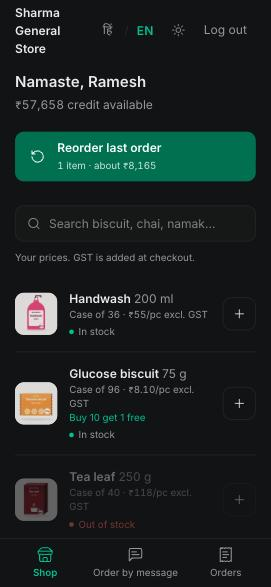
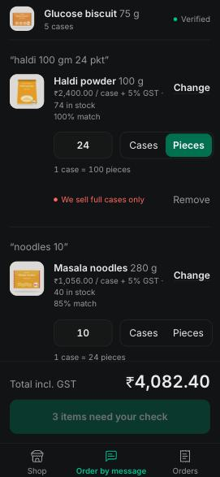

Technical Design Document · Retailer ordering app with AI order capture for an FMCG distributor in Jabalpur
The brief asks for one slice to work end to end: retailer catalogue with prices and schemes, cart and order, AI capture from a text order, and an order desk with Tally export, for two roles (retailer, order desk), with the scheme engine as the hard part. That slice is built and works on realistic sample data. Around it I added the smaller "must haves" that came almost free once the core was right: repeat order, credit limit with holds, a van loading list, the "no order in 14 days" list, Hindi and English, and an installable app shell.
The brief puts the cost at ₹52.5 lakh a year: ₹31.5 lakh from 5% of orders having a wrong item or quantity, ₹15.6 lakh of order-entry staff, ₹5.4 lakh of margin lost to stock-outs found after ordering. The design choices map to those three lines:
| Cost line | What causes it | What the app does about it |
|---|---|---|
| Wrong item / qty (₹31.5 L) | Retyping free text; guessing "dabba" means a case; similar SKUs (75 g vs 200 g) | Every captured line keeps the retailer's words next to the SKU; units that are not clearly cases are asked; unsure lines must be ticked; corrections become per-shop aliases so the same mistake isn't made twice. |
| Order entry staff (₹15.6 L) | 6 people retype everything into Tally next morning | App orders need no typing. Captured orders need a check, not typing: high-confidence lines are pre-accepted. Export is one click into a Tally import file. |
| Stock-outs after ordering (₹5.4 L) | Salesman and retailer don't see stock at the counter | Stock is shown per SKU, out-of-stock lines cannot be ordered, the same product's other pack size is offered as a one-tap substitute, and stock is reserved when the order is placed. |
Stack: React + Vite (frontend), Node.js + Express (API), PostgreSQL (database), Prisma (ORM). This is the client's chosen stack. Three folders, one TypeScript codebase, one deployable:
shared/ pure TypeScript used by both sides: scheme engine, capture reader, Tally writer, API types, i18n server/ Express API: routes → services → Prisma → PostgreSQL web/ React SPA built by Vite: pages, components, cart state
/api/* and the built SPA from the same origin. Same origin means the session cookie needs no CORS, and there is one thing to deploy and monitor. In development Vite runs the SPA with hot reload and proxies /api to Express.shared/ layer. The scheme engine, capture reader and Tally writer have no database, clock or network. That makes them testable with tables of cases, and lets the same pricing code run in the React cart (instant feedback, no round trip on 3G) and in Express (the authority when the order is placed). shared/api.ts holds every request and response type, so the API and the React app can't drift apart without a compile error.FOR UPDATE locks.useQuery hook, and the cart is a React context persisted to localStorage.deployment.md.Considered and rejected: separate frontend and API hosts (CORS, two deployments, cross-site cookies for no gain at this size); Firebase (weak for transactional stock and credit, and the reporting is relational); a React Native app (the brief asks for an installable web app, and low-end phones have little storage for another app); calling the LLM for everything including SKU matching (opaque confidence, cost per message, and no way to learn per-shop words).
| Entity | Key fields | Notes |
|---|---|---|
| User | phone (unique), role RETAILER | DESK, lang, retailerId, active | A retailer user belongs to one shop. Deactivating takes effect on the next request (session is re-checked against the DB). |
| OtpChallenge | phone, codeHash (HMAC), attempts, expiresAt, consumedAt | Codes are never stored in clear. |
| Retailer | code (Tally ledger alias), shop, area, route, creditLimitPaise, outstandingPaise, outstandingAsOf | Outstanding is a Tally snapshot; the timestamp matters for credit (A-09). |
| Product (SKU) | code, name, nameHi, brand, packLabel, unitsPerCase, unitPricePaise, gstRateBp, stockCases, keywords[] | Keywords hold shop slang ("peti", "surf", "chai patti") used by capture. |
| RetailerPrice | (retailerId, productId) → unitPricePaise | "His price". Missing row = base dealer price. |
| Scheme | type FREE_GOODS (buyCases, freeCases) | SLAB_DISCOUNT (slabs JSON), validFrom, validTo | Several may exist per SKU; the engine picks one (A-06). |
| Order / OrderLine | number, status CONFIRMED | CREDIT_HOLD | EXPORTED | REJECTED, source APP | CAPTURE, totals; line: cases, freeCases, prices, discount, GST, schemeLabel | Lines snapshot prices so later price changes never rewrite history. idempotencyKey is unique. |
| Capture / CaptureLine | rawText, channel, parser, status; line: rawText, phrase, qty, unit CASE | PIECE | UNKNOWN, productId, confidence, matchedBy, alternatives | The draft a person reviews. Nothing becomes an order until confirmed. |
| RetailerAlias | (retailerId, phrase) → productId | Learned from corrections, per shop. |
| ExportBatch, AuditLog | batch of orders sent to Tally; who did what, when | Batches can be downloaded again. The order page shows the audit trail. |
Money is integer paise everywhere; quantities are whole cases. Floating point never touches a rupee.
POST /api/shop/orders sends only product ids, case counts, an idempotency key and the total the person saw. The server re-prices inside a locked transaction. If its total differs (price or stock changed), it refuses and the cart refreshes with a clear message instead of silently charging a different amount.POST /api/captures/:id/confirm enforces the same rules on the server (the UI cannot skip them), creates the order through the same placeOrder service, marks the capture done and saves corrections as aliases, all in one transaction.Inbox (oldest message first, credit holds, counts) → review → order page (release hold, reject with a reason the shop sees; rejecting returns stock) → Tally export (select confirmed orders, create a batch, download XML or CSV; a status-guarded update prevents two people exporting the same order) → van loading list by route (paid + free cases) → quiet shops (no order in 14 days, quietest first, tap to call).
shared/pricing.ts is pure and shared by the React cart and the Express API. Rules, each covered by tests:
| Rule | Behaviour |
|---|---|
| Case price | pack price × packs per case. Biscuit 75 g: ₹8.10 × 96 = ₹777.60; detergent 1 kg: ₹101.50 × 20 = ₹2,030.00; tea 250 g: ₹118 × 40 = ₹4,720.00 (A-01). |
| Free goods | floor(cases ÷ buy) × free, repeating: 10 → 1 free, 20 → 2. No charge and no GST on free cases (A-07, verify). |
| Slab discount | Highest slab reached applies to the whole line; slabs may be unsorted. GST is charged on the discounted value. |
| One scheme per line | Never stacked. If two are live, the one worth more to the retailer at that quantity wins, ties by id so pricing is deterministic (A-06). |
| Validity | Live when validFrom ≤ now ≤ validTo; expired and future schemes are ignored; malformed ones (buy 0) are ignored rather than dividing by zero. |
| Stock | Out of stock or above stock blocks the line. Free goods come from the same stock: if not enough is left, give what is left and flag it without blocking. |
| Nudges | "Add N more cases, get 1 free" / "for 3% off" when within half the threshold and stock can cover it (A-08). |
| Rounding | Integer paise, half up, per line (A-05). Lines that are blocked are priced for display but excluded from totals. |
| Duplicates | Two cart lines of the same SKU are merged before pricing, so a threshold can't be split or doubled. |
Worked example from the brief. Detergent 1 kg, 5 cases: gross ₹10,150.00, 3% = ₹304.50, taxable ₹9,845.50, GST 18% = ₹1,772.19, total ₹11,617.69. At 2 cases (the brief's sample order) there is no discount and the cart says "Add 3 more cases for 3% off". Biscuit at 5 cases says "Add 5 more cases, get 1 free". Tea 250 g has 0 stock and is blocked, with tea 500 g offered as a substitute.
message ──► extract (LLM if configured, else rules) ──► per line: words, qty, unit, sizes
│ │
└─ LLM output cross-checked by rules ─────┘
▼
match against THIS shop's catalogue ◄── shop aliases, shop order history
▼
SKU + confidence + reason + 2 alternatives ──► person reviews ──► order + learned aliases
Extraction splits on commas, new lines, "aur/and", numbering and danda; reads digits, Devanagari digits and number words (ek, do, teen, पांच…); separates pack sizes ("1 kilo", "250 wala", "75") from quantities; and reads units: peti, case, carton = case; pkt, pc, nag = piece; dabba, box or nothing = unknown. "do" is two before a unit and "give" at the end ("bhej do").
Matching scores every SKU: word coverage against name, Hindi name, brand and slang keywords (exact, phonetic for Hinglish spellings such as biskut / biscuit, prefix and edit distance), a bonus for intact phrases ("washing powder"), +20 for a matching pack size and −25 for a conflicting one, and up to +8 for SKUs this shop orders often.
| Situation | What happens |
|---|---|
| Two SKUs score close ("biscuit" alone) | Confidence is reduced by 1.5 × the missing margin below 15 points, so a near tie can't show as "Sure". The shop's history breaks the tie and the screen says "Picked from this shop's past orders". |
| Nothing matches well (score < 35) | No guess. The line shows "Choose the product" with the best alternatives and the full list. |
| Unit unclear ("10 dabba", "biscuit 5") | Unit stays UNKNOWN and the person must answer Cases or Pieces. Never guessed (brief). |
| Pieces ("ketchup 24 pkt") | We sell cases (A-04). 24 pieces of a 24-pack case is shown as "= 1 case"; a non-whole number asks for cases. |
| Quantity missing or a fraction ("aadha peti") | Left empty; the person enters cases. |
| Medium / low confidence | The person must tick "I've checked this line". High-confidence lines are pre-accepted, so the desk only reads the doubtful ones. |
| Matched SKU is out of stock | One-tap substitute with the same product's other pack. Substitutes are not learned: tea 500 g is not what "chai patti 250" means. |
| Wrong SKU picked by the reader | The person picks an alternative or any product. On confirm, the shop's words become an alias for that SKU, for that shop only. Next time the same words match at 97% with "Learned from an earlier correction". |
| LLM fails, times out or returns bad output | Falls back to the rule reader; the review screen says so. The desk still gets a draft. |
To judge matching on a realistic catalogue rather than an easy one, 22 deliberate look-alikes were added (43 SKUs): more pack sizes of the same product, milk vs glucose vs cream biscuits, tea leaf vs tea dust 1 kg, rock vs iodised salt, liquid detergent vs dishwash liquid, two neem soaps. shared/capture/eval holds 30 messages typed the way shops type (no commas, Hinglish, Devanagari, typos, brand slang, missing units, a product we don't sell), with 49 lines labelled the way a careful desk clerk would decide. npm run eval scores it; a test fails the build if the rule reader drops below the floor.
| Reader | Right SKU | Qty / unit | Wrong but "Sure" | Auto-accepted | Ambiguous handled |
|---|---|---|---|---|---|
| Rules, first run | 83.7% | 93.9% / 93.9% | 0 | 79.6% | 7/7 |
| Rules, after fixes, no shop history | 91.8% | 100% / 100% | 0 | 79.6% | 7/7 |
| Rules, after fixes, with shop history | 95.9% | 100% / 100% | 0 | 91.8% | 7/7 |
| Gemini + guardrails, with history | 98% | 100% / 100% | 0 | 91.8% | 7/7 |
The first run's misses had general causes, fixed as rules rather than per-message patches: messages without commas are cut at each "number + peti"; a longer, different word is no longer a prefix match ("rocket" had matched rock salt); "4 pack wala" is read as a description, not the order; Devanagari size words (बड़ा) count like "bada". What the rules still miss is brand slang ("maggi" for noodles, "vim" for a dishwash bar), shown as low so the desk is asked. Gemini fixed exactly those two; its only miss was suggesting noodles for "rocket", which the guardrails labelled an AI suggestion at medium. "Dangerous" errors (a wrong product shown as "Sure", which a busy desk would wave through) stayed at zero in every run. The set is small and hand-written; the next step is to label 200 real WhatsApp orders from the client.
Rules are free, instant, offline-capable, deterministic and explainable, and the vocabulary is narrow (43 SKUs, a few dozen slang words). Their weakness is open-ended phrasing. An LLM is good at exactly that, but its confidence is not calibrated and it can't learn a shop's words. So the LLM is used only to extract and normalise lines (structured output against a schema), and the deterministic matcher still decides the SKU and the confidence.
server/src/services/llm.ts uses Google's official @google/genai SDK with a Google AI Studio key. It asks gemini-3.5-flash-lite for JSON constrained to a response schema, at temperature 0 and low thinking, with the catalogue terms in the system instruction, then validates the reply again with zod. A blocked prompt, a safety or length stop, non-JSON or wrong-shaped output, a quota error or a timeout (15 s) all raise, and capture falls back to the rule reader; a transient 503 gets one quick retry first. Enabled with LLM_PROVIDER=gemini and GEMINI_API_KEY; LLM_MODEL pins another model.
The model suggests; the retailer's words decide. Running it against the samples showed three ways a model quietly overstates what the shop wrote, and each now has a rule:
| What Gemini did | Risk | Rule now |
|---|---|---|
| Called "biscuit 5" a glucose biscuit | Ambiguous line jumped from "check, 63%" to "sure, 100%", so the desk would not be asked | Gemini's words are kept apart (aiWords). Confidence comes from the shop's own words; agreement adds at most 15 points; an AI-only pick is labelled "AI suggestion" and capped at medium. Aliases are keyed on the shop's words only. |
| Filled in "150 g" for "lal wala sabun" (no size written) | An invented pack size boosted the match to 78% | A model pack size is used only if its number appears in the shop's words. |
| Kept "4)" list numbering in its copy of the line | The 4 was read as a pack size | The line parser strips list numbering itself. |
| Said "CASE" for "10 dabba" | A guessed unit | The unit always comes from the shop's words; "dabba" stays a question. |
Measured (free tier, 4 sample messages, 14 lines): same SKU, quantity and unit as the rule reader on every line; clear lines rise from 85% to 95%; "biscuit 5" stays medium 73% and "lal wala sabun" low 36%, so both still need a person; 1.7–4.6 s per message. Larger "flash" models took 12–15 s or more and were often overloaded (503), so the lite model is the default. npm run ai:check repeats this comparison.
Photos and voice notes need an AI that reads images and audio, so they use Gemini; without a key the buttons explain that and point to typing. The flow reuses everything above:
POST /api/captures/media. The server checks the type against an allow-list, caps it at 8 MB, and sniffs the first bytes so a file can't pretend to be a photo.[unclear] instead of guessing. Something that isn't an order (a selfie, silence) is refused.[unclear] line is low. The review screen shows the photo, or plays the voice note, above the transcript.Measured live (free tier, files generated for the test: a photo of a five-item list in a handwriting font, Roman and Devanagari mixed; a Hindi voice note spoken by macOS's Hindi voice): the photo was transcribed exactly in 2.8–4.9 s end to end, all five SKUs matched, and "24 pkt" correctly stayed pieces. The voice note took 3.3–3.9 s; on one run Gemini heard "सर्फ" (surf) correctly, on another it heard "salt". That is the case the 79% cap, the playable original and the no-learning rule exist for. Not yet tested: real handwriting on a real phone camera, a real person's voice with shop noise, and in-app recording on a phone (the test browser has no microphone; its "microphone blocked" message was checked).
/api/shop retailer, /api/desk desk). Every retailer query is scoped by the shop id from the session, never from the URL: another shop's order id returns 404, so ids don't leak. The React route guards are only for navigation; the API is the gate. Covered by API tests.x-powered-by off.= + - @ are neutralised against spreadsheet formula injection. Errors return a generic message; details go to the server log only..env is git-ignored, .env.example lists names only. No real personal data: all shops, people and phone numbers (90000 000xx) are invented.Kirana owners order between customers, on low-end Android phones, in Hindi or English. The app is quiet on purpose: white space instead of boxes, hierarchy from size and weight instead of colour, and one obvious thing to do on each screen.


The order review screen follows ten rules: no repeated unit prompts or long AI explanations; a bottom sheet with suggestions and search-as-you-type instead of a 43-item dropdown; the shop's words, product, match %, the shop's own price and stock on every line; one quantity box and one Cases/Pieces switch, never both units at once; "peti/case" selects Cases and "packet/piece" selects Pieces; anything else asks instead of guessing; the pack conversion is always shown; a missing quantity is never filled in; open lines and verified lines look clearly different; and Confirm order stays disabled until every product, quantity and unit is settled. The backend contract did not change.



scripts/render-pack-images.ts. Look-alikes stay distinguishable: three glucose biscuit sizes, tea leaf vs tea dust, rock vs iodised salt, liquid detergent vs dishwash liquid.

Smaller decisions: every row says "excl. GST" with the per-piece price, and the cart itemises GST, because dealer invoices are ex-GST and rates differ by product (0, 5, 18%). The login resends an OTP only after a 30-second countdown that matches the server's limit. The desk decides whether a correction becomes the shop's saved word ("Save 'kala' as this shop's word", ticked by default). Unit questions name the specific problem ("Cases or pieces?") rather than a generic "Check this". The bottom navigation has three places (Shop, Order by message, Orders) and no cart tab, because the cart bar already carries it. Product images are rendered pack shots (the brands are fictional, so there are no real photos to use): one per SKU, drawn from the catalogue with the right packaging, colour, names and pack size, 2.4 kB each, lazy-loaded. The order desk got the same tokens but no layout redesign. The full rationale is in docs/design-rationale.md.
font-display: swap; the Devanagari file is downloaded only when a screen shows Hindi. Product images: 192 px WebP pack shots of about 2.4 kB each (103 kB for all 43), lazy-loaded so the first screen fetches about 16 (about 38 kB), cached for a year and kept offline by the service worker. Static assets carry content hashes and a one-year cache; the service worker keeps them for repeat visits and shows an offline page instead of the browser's error.151 tests (Vitest + supertest), run in CI against Postgres together with lint, typecheck and a production build:
[unclear] lines low, and learns no aliases from corrections.Only the brief was used. Where it is silent, I decided and labelled it here. Items marked verify need the client.
| # | Assumption |
|---|---|
| A-01 | The sample "Dealer Price" is per pack; case price = pack price × packs per case (₹8.10 is a sensible price for a 75 g biscuit, not a case of 96). |
| A-02 | Dealer prices exclude GST. Every price says "+ GST %"; the cart shows the GST-inclusive total. |
| A-03 | GST rates are placeholders: packaged food 5%, salt 0%, home care 18%. Verify with the client's accountant; not tax advice. |
| A-04 | Retailers order whole cases. Pieces are converted to cases where exact, otherwise the reviewer enters cases. Loose-piece selling is out of scope. |
| A-05 | Money in integer paise; discount and GST rounded half up per line. |
| A-06 | One scheme per SKU line, never stacked; if several are live, the one worth most to the retailer at that quantity. |
| A-07 | Free goods use the same stock, carry no charge and no GST. Whether GST applies to free supplies is for the accountant: verify. |
| A-08 | Nudges appear within half of the next threshold (rounded up) and only if stock can cover it. |
| A-09 | Available credit = limit − outstanding from the last Tally sync − orders accepted since that sync. Held orders don't count until released. |
| A-10 | An order over credit is accepted on hold, not refused, and the retailer is warned before placing it. The desk releases or rejects. |
| A-11 | Stock is reserved when an order is placed (including holds) and returned on rejection. Stock figures would come from Tally (mocked). |
| A-12 | Retailer screens are Hindi and English; the order desk works in English. Hindi copy needs a native review. |
| A-13 | Corrections by whoever confirms (desk, or a retailer on their own order) become aliases scoped to that shop. Substitutions for stock are not learned. |
| A-14 | Orders go to Tally as Sales Order vouchers; invoicing and e-invoicing stay in Tally. Ledger names ("Sales GST 18%", "Output CGST 9%", party "Shop (code)") are placeholders that must match the client's masters; intra-state (MP), so CGST + SGST. Verify. |
| A-15 | WhatsApp is mocked: the desk pastes a message and picks the shop (in production the sender's number identifies it). |
| A-16 | Van loading list = accepted orders from the last 24 hours, grouped by the shop's route. |
| A-17 | All brands, shops, people and numbers in the seed are invented. Schemes in the seed run from 36 days before to 60 days after seeding so the demo never expires. |
| A-18 | Sessions last 30 days for retailers and 12 hours for the desk. |